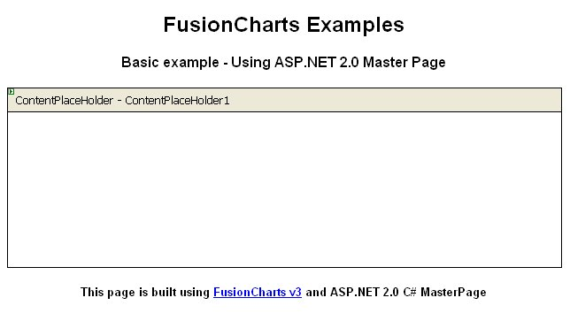
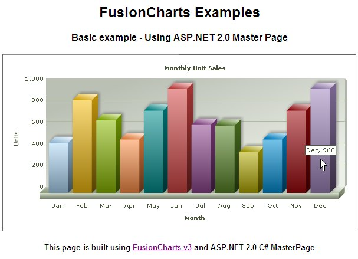

| Master Page Sample |
FusionCharts XT can effectively be used with C# (ASP.NET) Master Pages to plot dynamic data-driven charts. In this example, we will show a basic sample to help you get started. In this example we will do the following:
Before you go further with this page, we recommend you to please see the previous section, Basic Examples, as we start off from concepts explained in that page. All code discussed here is present in Download Package > Code > CS > MasterPage_Example folder. |
| Creating a Master Page |
We have created a simple master page with a header and a footer and a content place holder. The code of the master page (MasterPage.master) is as shown below:
<%@ Master Language="C#" %>
<html>
<head runat="server">
<style type="text/css">
<!--
body { font-family: Arial, Helvetica, sans-serif; font-size: 12px; }
.text{ font-family: Arial, Helvetica, sans-serif; font-size: 12px; }
-->
</style>
</head>
<body>
<center>
<form id='form2' name='form1' method='post' runat="server">
<h2>FusionCharts XT Examples</h2>
<h4>Basic example - Using ASP.NET 2.0 Master Page</h4>
<asp:ContentPlaceHolder ID="ContentPlaceHolder1" runat="server"> </asp:ContentPlaceHolder>
<p />
<h5>This page is built using <a href="http://www.fusioncharts.com" target="_blank"> FusionCharts XT</a> and ASP.NET 2.0 C# MasterPage
</h5>
</form>
</center>
</body>
</html> |
|
Here we,
The master page will look like the following in Design view:  |
| Creating a content page |
Now, let's create a content page to apply this master page and add a chart to it. Our content page (Default.aspx) will be like this : <%@ Page Language="C#" MasterPageFile="~/MasterPage.master" CodeFile="Default.aspx.cs" Inherits="_Default" Title="FusionCharts XT Example - Using ASP.NET 2.0 Master Page" %> <asp:Content ID="Content1" ContentPlaceHolderID="ContentPlaceHolder1" Runat="Server"> <script language="javascript" type="text/javascript" src="../FusionCharts/FusionCharts.js"></script> <% //Included FusionCharts.js to embed FusionCharts XT easily in web pages //The following code will generate a chart from code behind file Default.aspx.cs %> <%=GetMonthlySalesChartHtml() %> </asp:Content> |
|
Here we,
Let's see how GetMonthlySalesChartHtml() works:
using InfoSoftGlobal;
public partial class SimpleChart : System.Web.UI.Page
{
public string GetMonthlySalesChartHtml()
{
//Create the chart - Column 3D Chart with data from Data/Data.xml
return FusionCharts.RenderChart("../FusionCharts/Column3D.swf", "Data/Data.xml", "","myFirst", "600", "300", false, false);
}
}
We have just used the RenderChart() method from the InfoSoftGlobal.FusionCharts class to return the HTML code for the chart (using JavaScript embedding). For simplicity, we have used a physical Data.xml file to provide chart data using the Data URL method. The container page will show up the chart in browser like the screenshot below:  |